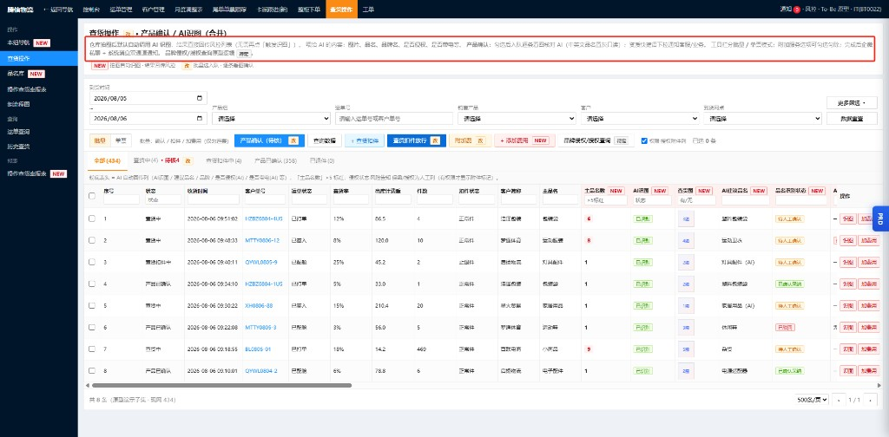

2026-08-18。覆盖：查货操作、品名库、操作查货率报表及全部弹窗/侧栏交互。说明均在本文，原型页不展示 PRD 长文案（侧栏 PRD 面板可折叠查看）。交互与文档结构参考报价组 PRD。 ← 风控组导航
ess-prototype-prd.js 嵌入）。核心区分：批量 = 把勾选的一批运单拉进产品确认操作台，本批处理完关闭；单票 = 每次只处理 1 票的查货 / 扣件 / 确认。两种模式下，操作台内的「确认并下一条」「扣件确定」始终按票执行，不存在一键确认整批。
| 模式 | 含义 | 勾选校验 | 典型操作 |
|---|---|---|---|
| 批量（默认） | 勾选的运单作为一批进入产品确认操作台；本批最后一条处理完自动关闭侧栏 | 产品确认 / +查货扣件：至少勾选 1 票（不支持无勾选自动入队） 添加费用 / 查货扣件放行：至少 1 票，可多票 批量添加附加服务：≥2 票；修改附加服务：恰好 1 票，或行「改附加」直接带出 |
① 勾选本批 →「产品确认」→ 操作台逐票确认或扣件 ②「+ 添加费用」→ 费用弹窗带出勾选的运单列表（默认全选、可勾除） |
| 单票 | 每次只处理 1 票：查货（识图）、扣件、确认 | 工具栏操作须恰好勾选 1 票，否则 toast 拦截 | 行「识图 / 加费用」直接处理当前票；或勾 1 票 → 产品确认 / 查货扣件 |
| 操作 | 批量模式 | 单票模式 |
|---|---|---|
| 产品确认 | 勾选票 → 操作台队列 → 按票确认/扣件 → 本批完毕关闭 | 勾 1 票 → 操作台处理该票 → 完毕关闭 |
| + 查货扣件 | 勾选票 → 操作台 → 按票「扣件确定」 | 勾 1 票 → 操作台扣件 |
| + 添加费用 | 勾选票 → 弹窗运单列表（默认全选） | 勾 1 票 → 弹窗仅该票 |
| 批量添加附加服务 | 勾选 ≥2 票 → 附加服务弹窗（多票回显/半选） | 不适用（须改用「修改附加服务」） |
| 修改附加服务 | 不适用（须 ≥2 票时用「批量添加」） | 勾 1 票，或行「改附加」直接带出当前票 |
| 行 · 识图 / 加费用 / 改附加 | 不受模式切换影响，始终单票（浏览/带出当前行，非批量队列） | |
流程对照：G2 风控组流程图 · 方案：0729 查货管理方案
以下为现网「查货操作」列表页截图，供开发/测试对照保留项与To-Be 改动项。To-Be 交互见 原型 与 二B 章。

| 区域（见图 1） | 现网 | To-Be | 标记 |
|---|---|---|---|
| 页头说明（红框长文案） | 页面内展示 AI 识图、产品确认、附加服务等说明 | 移除；规则仅在本 PRD + 原型侧栏 PRD 面板 | 改 |
| 列表上方列头图例 | — | 移除；粉底表头 / 主品名数标红等说明迁入 PRD 侧栏 | 改 |
| 工具栏 | 批量/单页、产品确认、查货扣件、批量添加附加服务 / 修改附加服务、添加费用、品牌授权查询等 | 保留主按钮；新增「批量/单票」模式提示；附加服务拆为两按钮（按勾选数量，与模式切换无关）；品牌侵权/授权标待定 | 改 |
| 状态页签 | 全部 / 查验中 / 待核实 / 查验扣件中 / 产品已确认 / 已退件 | 取消独立「待核实」Tab；查货中 Tab 仅显示数量，不另标「待核」 | 改 |
| 列表 · 主品名数 | 运单管理已有字段「主品名数」（见运单管理列表，位于「主品名」与「商品材质」之间） | 查货操作列表同步展示同名字段；非 AI 回传；>5 标红提醒；超品名费不自动加收 | NEW |
| 列表 · AI 列 | 部分列或无 AI 回传列 | 新增 AI识图、查货图、AI建议品名、品名识别状态、AI品牌、侵权/带电(AI) 等（粉底表头） | NEW |
| 列表 · 侵权 / 授权列 | 无 AI 侵权列；无授权附件列 | 新增是否侵权(AI)、侵权状态、风险告知、保函/国内授权/国外授权上传标记（见 2.6） | NEW |
| 行操作 | 无（列表无行内操作列） | NEW 新增「识图」「加费用」；产品确认走工具栏侧栏队列（无行内「确认」） | NEW |
| 产品确认 | 无统一侧栏队列；分散入口或线下处理 | 工具栏「产品确认」→ 勾选票 → 操作台逐条按票确认/扣件；本批完毕自动关闭 | 改 |
| AI 识图触发 | 人工或分散流程 | 仓库拍图后自动识图回传列表 | NEW |
| 左侧菜单 | 查货操作、品名库、操作合规报表等 | 结构保留；「操作查货率报表」对齐 FK006 报表能力 | 改 |
测试验收：以 To-Be 原型 + 本章对照表为准；现网截图仅说明改造起点，不要求与现网 UI 完全一致。
原型：风控组-查货操作-AI识图品名识别-原型.html · 角色：风控查货员。
| 字段 | 标记 | 说明 |
|---|---|---|
| 到货时间、产品组、运单号、销售产品、客户、到货网点 | 现网 | 主筛选区常驻 |
| 终配舱单号、扣件状态、记录状态、查货员、业务员、客户类型 | 现网 | 「更多筛选」展开 |
| AI识图状态 | NEW | 未识别 / 识别中 / 已识别 / 识别失败 |
| 品名识别状态 | NEW | 未识别 / 待人工确认 / 已确认采纳 |
| AI建议品名 | NEW | 关键字模糊 |
| 是否侵权(AI) | NEW | 未见明显侵权 / 疑似侵权（AI 回传枚举，见 2.6） |
| 侵权状态 | NEW | — / 待查询 / 可放行 / 需授权 / 确认侵权 |
| 风险告知 | NEW | 已告知 / 未告知 |
| 是否上传保函、国内授权、国外授权 | NEW | 已上传 / 未上传；列表与筛选全员可见 |
| 照片已看完 | 改 | 是 / 否 |
| 成本费用 | NEW | 未添加 / 已加业务成本 / 已加应收+成本 |
「数据重置」仅清空 NEW 筛选 + 状态页签，回到「全部」。
| 按钮 | 入口条件 | 行为摘要 |
|---|---|---|
| 产品确认（已选 N） | 批量：勾选 ≥1 票；单票：恰好 1 票（不支持无勾选） | 打开产品确认操作台，见 第三章；本批处理完自动关闭 |
| 查询数据 | — | 按筛选刷新列表 |
| 查货详情 | 勾选 1 票；或行「详情」无需勾选 | 打开只读弹窗：子单明细 / 查货记录 / 附件信息，见 2.8 |
| + 查货扣件 | 批量/单票 + 勾选 | 进入确认队列，侧栏勾查货标记后点「扣件确定」 |
| 查货扣件放行 | 批量/单票 + 勾选 | 打开查货扣件放行弹窗，见 7.3；仅处理查货扣件类问题件 |
| 批量添加附加服务 | 勾选 ≥2 票 | 打开附加服务弹窗（多票回显/半选），见 7.4 |
| 修改附加服务 | 勾 1 票；或行「改附加」无需勾选 | 打开附加服务弹窗，带出列表已有附加服务并回显勾选，见 7.4 |
| + 添加费用 | 批量/单票 + 勾选 | 打开添加成本费用弹窗，见 7.2 |
| 品牌侵权/授权查询 | 待定 | 仅 toast，不打开完整流程 |
| 页签 | 数据范围 | 角标 |
|---|---|---|
| 全部 | 不限状态 | 总数 |
| 查货中 | 记录状态=查货中 | 仅展示该状态票数 (n)，不另标「待核」 |
| 查货扣件中 | 扣件待处置 | 数量 |
| 产品已确认 | 确认完成 | 数量 |
| 已退件 | 退件 | 数量 |
待确认口径（后台逻辑，列表不展示角标）：needsProductConfirm = 有查货图且品名未确认采纳。批量模式下须先勾选再点「产品确认」入队；查货扣件中待确认票仍可被勾选入队。
| 列组 | 列名 | 标记 | 表头 | 说明 |
|---|---|---|---|---|
| 运单同步 | 主品名数 | NEW | 粉底 | 取运单管理同名字段「主品名数」（主品名个数）；查货列表只读同步；>5 红色；仅提醒，不自动加收 |
| AI 自动回传 | AI识图 | NEW | 粉底 | 未识别 / 识别中 / 已识别 / 识别失败 |
| 查货图 | NEW | 粉底 | 缩略图数量；点击可预览 | |
| AI建议品名 | NEW | 粉底 | AI 建议中文品名 | |
| 品名识别状态 | NEW | 粉底 | 未识别 / 待人工确认 / 已确认采纳 | |
| AI识别品牌 | NEW | 粉底 | 识图识别品牌；含「疑似」时触发授权关注 | |
| 是否侵权(AI) | NEW | 粉底 | AI 侵权风险结论；只读，不可手改 | |
| 是否带电(AI) | NEW | 粉底 | AI 带电判断；只读 | |
| 侵权 · 处置 | 侵权状态 | NEW | 普通 | 风控处置结论：— / 待查询 / 可放行 / 需授权 / 确认侵权 |
| 风险告知 | NEW | 普通 | 扣货/涉证风险是否已告知客户与业务：已告知 / 未告知 | |
| 授权附件 NEW | 是否上传保函 | NEW | 普通 | 侧栏上传保函后回写；见 2.6 |
| 国内授权 | NEW | 普通 | 国内品牌授权文件上传标记 | |
| 国外授权 | NEW | 普通 | 国外品牌授权文件上传标记 | |
| 业务 | 成本费用、查货标记/备注、附加服务等 | 现网/改 | 普通 | 沿用现网列；成本费用见 7.2 |
| 行操作 | 识图 / 加费用 / 改附加 | NEW | — | 现网无行操作列；To-Be 新增。「改附加」= 单票修改附加服务并带出已有项 |
粉底表头 = 运单同步列（主品名数）+ AI 自动回传列；侵权状态 · 风险告知 · 保函/国内外授权 = 业务列，全员可见。
| 项 | 规则 |
|---|---|
| 数据来源 | 运单管理（OrderManager）列表字段 「主品名数」，与「主品名」「商品材质」等同表展示；查货操作列表列名保持一致 |
| 口径 | 该运单申报的主品名个数（整数）；由运单侧维护/计算，查货页不可手改，非 AI 识图结果 |
| 同步时机 | 进入查货列表或运单主品名数变更后刷新；开发与运单管理共用同一字段键/接口 |
| 展示规则 | ≤5 正常；>5 列表标红（name-cnt over），侧栏/添加费用弹窗同步展示 |
| 费用联动 | 不自动落账；主品名数 >5 仅列表标红提示；可选「多品名费30/个」并手动填写金额写入（暂不支持超出个数自动计算） |
| 列表列 | 写入来源 | 可编辑 | 枚举 / 展示 |
|---|---|---|---|
| 是否侵权(AI) | 仓库拍图 → 系统自动 AI 识图回传 | 否 | 未见明显侵权 / 疑似侵权；与侧栏「侵权结论（AI · 只读）」一致 |
| 侵权状态 | 风控处置（侧栏确认/扣件；完整「品牌侵权/授权查询」流程待定） | 列表不可直改 | — 无处置 · 待查询 AI/品牌疑似 · 可放行 · 需授权 · 确认侵权 |
| 风险告知 | 产品确认侧栏「风险告知」区块勾选资质快捷语并成功双通道通知后回写 | 列表不可直改 | 已告知（绿）/ 未告知（灰） |
| 是否上传保函 | 产品确认侧栏「⑤ 附件 · 保函」上传/更换 | 侧栏上传 | 已上传 / 未上传；hover 展示文件名 |
| 国内授权 | 侧栏「⑤ 附件 · 国内授权」 | 侧栏上传 | 风控传授权文件区分国内渠道；已上传 / 未上传 |
| 国外授权 | 侧栏「⑤ 附件 · 国外授权」 | 侧栏上传 | 风控传授权文件区分国外渠道；已上传 / 未上传 |
| 场景 | 列表展示 | 说明 |
|---|---|---|
| 已有文件 | 绿标「已上传」 | 侧栏上传成功后即时回写；tooltip 显示文件名 |
| 未上传 · 普通票 | 灰标「未上传」 | 不强制补传 |
| 未上传 · 涉侵权/授权票 | 红标「未上传」 | 提示「涉侵权/授权场景，建议补传」 |
涉侵权/授权票判定（满足任一即视为需关注附件）：
— 且不为「未见侵权 / 可放行」。保函与品牌授权独立计数：一票可同时有保函 + 国内授权 + 国外授权；缺哪项只红标对应列。
| 触发 | 侵权状态 | 关联动作 |
|---|---|---|
| AI 识图完成，品牌/侵权无异常 | — | — |
| AI 识别品牌疑似或侵权(AI) 疑似 | 待查询 | 列表红/黄 attention；建议上传授权或走侵权查询（流程待定） |
| 外链/人工判定无侵权或已备案 | 可放行 | 可继续产品确认 |
| 判定需客户提供授权 | 需授权 | 侧栏上传国内/国外授权；授权主体与报关抬头比对（关务衔接，见九、待定） |
| 确认侵权且无法授权 | 确认侵权 | 扣件；可加「侵权罚款」成本费用（完整流程待定） |
工具栏「品牌侵权/授权查询」完整抽屉流程本期不做；上表状态列与附件列仍按侧栏上传、AI 回传、确认/扣件回写生效，供列表筛选。
riskNotify →「已告知」。QUICK_FEE（21 条，见 8.3）；勾选后双通道通知；不回写「风险告知」列。下表覆盖查货操作列表与筛选区所有 NEW 字段。侧栏专用字段见 3.7；费用弹窗字段见 7.2.1；通知列表见 7.5.1。
| 字段 | 展示位置 | 数据来源 | 取值 / 枚举 | 更新时机 | 可编辑 |
|---|---|---|---|---|---|
| 主品名数 | 列表列（粉底） | 运单管理 OrderManager 同名字段 |
整数 = 该运单申报主品名个数；>5 标红；详见 2.4.1 | 列表加载 / 运单主品名数变更后同步 | 否（只读） |
| AI识图 | 列表列、筛选 | 仓库拍图 → 系统自动 AI 识图任务 | 未识别 → 识别中 → 已识别 / 识别失败 |
拍图上传触发；AI 回调成功/失败时回写 | 否 |
| 查货图 | 列表列（缩略） | 仓库拍图 / WMS 附件 | 展示图片数量；点击预览大图（记「已看图」，见「照片已看完」） | 仓库上传/删除查货图时 | 否（列表仅预览） |
| AI建议品名 | 列表列、筛选（模糊） | AI 识图输出 | AI 建议的中文品名文本；无结果时为 — |
AI 识图完成时；产品确认采纳后仍保留历史建议值 | 否 |
| 品名识别状态 | 列表列、筛选 | AI 初值 + 风控确认回写 | 未识别 / 待人工确认 / 已确认采纳 |
AI 完成 → 通常 待人工确认；侧栏「确认并下一条」→ 已确认采纳 |
列表否；侧栏通过确认动作间接改 |
| AI识别品牌 | 列表列 | AI 识图输出 | 识别到的品牌名；无品牌 —；不确定时含「疑似」前缀（如「疑似Nike」） |
AI 识图完成时；含「疑似」时触发授权附件红标规则（2.6.3） | 否 |
| 是否侵权(AI) | 列表列、筛选 | AI 识图输出 | 未见明显侵权 / 疑似侵权（与侧栏「侵权结论（AI · 只读）」一致） |
AI 识图完成时；后续不随人工确认覆盖 | 否 |
| 是否带电(AI) | 列表列 | AI 识图输出 + 申报带电上下文 | 不带电 / 带电 / 待判 等；与侧栏「是否带电（AI · 只读）」一致 |
AI 识图完成时 | 否 |
| 侵权状态 | 列表列、筛选 | 风控人工处置（侧栏确认/扣件；完整侵权查询流程待定） | — / 待查询 / 可放行 / 需授权 / 确认侵权；流转见 2.6.4 |
AI 疑似 → 常自动为 待查询；侧栏扣件/授权上传/人工判定后更新 |
列表否 |
| 风险告知 | 列表列、筛选 | 侧栏「风险告知」区块 + 双通道通知 | 已告知 / 空或 未告知（列表灰标） |
侧栏勾选「涉及资质 · 快捷语」并确认/扣件且通知成功后 → 已告知；见 2.6.5 |
列表否 |
| 是否上传保函 | 列表列、筛选 | 侧栏「⑤ 附件 · 保函」上传结果 | 已上传（绿，tooltip 文件名）/ 未上传（灰或红，见 2.6.3） |
侧栏上传/更换/清除后立即回写 | 侧栏上传；列表只读 |
| 国内授权 / 国外授权 | 列表列、筛选 | 侧栏「⑤ 附件」对应槽位 | 同上；国内/国外独立计数 | 侧栏上传后回写 | 侧栏上传；列表只读 |
| 成本费用 | 列表列、筛选 | 「添加费用」弹窗 / 附加服务关联 / 侵权罚款 | 未添加 / 已加业务成本（直客）/ 已加应收+成本（同行）；摘要文案见 costLabel |
费用确认写入时；同一票多次写入取最新去向（同行优先于直客） | 列表否；通过弹窗/附加服务写入 |
成本费用明细feeItems[] |
侧栏「已添加费用」、列表 costLabel 摘要 |
每次费用写入追加一条 | 项：费用类型、金额、币种、写入去向、来源（添加费用/附加服务/侵权处置）、时间 | 「添加费用」确认 / 附加服务勾选关联 / 侵权扣件罚款 | 否（只读展示）；详见 7.2.1 |
| 照片已看完 | 筛选；侧栏导航「已看图/未看图」 | 侧栏/预览交互 | 本票有查货图且操作台内至少点开 1 张 → 是；否则否。入队时重置为否 | 点击查货缩略图或预览弹窗「知道了」；入队时清零 _photoSeenInConfirm |
否（由看图行为驱动） |
| 行操作 | 列表最右列 | — | 「详情」→ 打开查货详情弹窗（只读）；「识图」→ 打开侧栏浏览模式；「加费用」→ 打开添加费用弹窗（仅该行）；「改附加」→ 打开修改附加服务弹窗并带出本票已有附加服务 | — | — |
AI 输入上下文（喂给模型，侧栏只读 chips 展示）：查货图片数、申报品名、申报品牌、申报是否侵权/带电、客户类型等；输出回写「AI 自动回传」列组，不包含主品名数（运单同步字段）。
对齐现网「详情」大弹窗；只读查看，不在此编辑品名/扣件/费用。与「产品确认」侧栏分工：侧栏=操作台，详情弹窗=子单追溯与附件汇总。
| 页签 | 列 / 内容 | 数据来源 |
|---|---|---|
| 详情 | 序号 · 运单号 · 子单号 · 是否查货 · 查货人名称 · 查货时间 · 查货备注 · 查货标记 · 是否核对 | 按运单件数展开子单；查货/核对状态与子单查货记录、列表「核对人/时间」联动；列头带筛选（现网） |
| 查货记录 | 操作时间 · 操作人 · 单号 · 主品名 · 图片 · 备注 | 仓库拍图查货、产品核对等操作日志；图片列缩略图可点开预览；按操作时间倒序 |
| 附件信息 | 附件类型 · 文件名 · 上传人 · 上传时间 · 备注 · 下载 | 查货图（WMS/仓库上传）+ 保函/国内授权/国外授权（侧栏上传回写）；与列表授权附件列一致 |
入口：工具栏「查货详情」（须勾 1 票）；列表行「详情」；客户单号列蓝色链接（同详情弹窗，无需勾选）。多票勾选时 toast 提示仅支持 1 票。
查货合规的主作业面：左图右表单，宽约 1120px，目标一屏完成单票核对。所有「确认 / 扣件 / 加费用 / 上传授权」的核心操作集中在此，列表页仅负责筛选、勾选与入队。
| 维度 | 说明 |
|---|---|
| 作业单位 | 侧栏始终逐票展示；即使批量入队，也是「一屏一票」，不会在同一屏并排多票。 |
| 两种打开方式 | 队列模式：工具栏「产品确认 / + 查货扣件」入队，头部显示「确认队列 m/n」；浏览模式：行「识图」或查货图缩略图，在当前列表筛选结果内切换，无队列角标。 |
| 批量 / 单票 | 指列表工具栏模式切换（见 0.4）。批量：勾选票进操作台 + 批量加费用；确认/扣件仍按票。单票：逐票查货/扣件/确认。 |
| 不可盲批 | 入队时重置本批「已看图」；导航区展示「已看图 / 未看图」；无查货图时确认/扣件按钮禁用。 |
| 本批结束 | 队列模式下最后一条「确认并下一条」或「扣件确定」成功后，侧栏自动关闭，toast「本批已全部确认完毕」 |
| 入口 | 列表前置 | 侧栏模式 | 说明 |
|---|---|---|---|
| 工具栏 · 产品确认 | 批量：勾选 ≥1 票（必须勾选，无勾选 toast）；单票：恰好 1 票 | 队列 / 操作台模式 | 将勾选票拉入产品确认操作台；侧栏内按票「确认并下一条」或「扣件确定」；本批最后一条处理完自动关闭侧栏 |
| 工具栏 · + 查货扣件 | 同「产品确认」勾选规则 | 队列 / 操作台模式 | 共用操作台；侧重勾扣件标记后点「扣件确定」，仍按票执行 |
| 行 · 识图 / 查货图 | 点击该行，无需勾选 | 浏览模式（单票） | 不受批量/单票切换影响；只打开当前 1 票，上一条/下一条在当前筛选结果内切换 |
后台 needsProductConfirm：有查货图且品名未确认采纳（含查货中、查货扣件中待核票）。已「产品已确认 / 已退件」不入队。
| 能力 | 批量模式 | 单票模式 |
|---|---|---|
| 产品确认操作台 | 勾选的一批运单；本批处理完关闭 | 仅 1 票；处理完关闭 |
| 确认 / 扣件 | 均按票在操作台执行（「确认并下一条」「扣件确定」） | |
| 添加费用（工具栏） | 勾选票 → 弹窗运单列表默认全选 | 勾 1 票 → 弹窗仅该票 |
| 添加费用（操作台内） | 带入本队列全部运单 | 带入当前 1 票 |
| 批量添加附加服务 | 勾选 ≥2 票；与批量/单票模式切换无关 | 不适用 |
| 修改附加服务 | 不适用 | 勾 1 票，或行「改附加」直接带出；与批量/单票模式切换无关 |
批量 / 单票切换不改变操作台布局；批量模式下也没有「一次确认整批」按钮。
| 控件 | 位置 | 行为 | 边界 |
|---|---|---|---|
| 队列进度 | 标题右侧 确认队列 m / n · 已看图/未看图 |
队列模式显示「确认队列」前缀 + 当前序号；浏览模式仅 m / n；本票是否已点查货图一并展示 |
当前票不在列表中时显示「—」 |
| 上一条 | 头部按钮 | 切换至队列/筛选列表中的上一条运单；仅查看，不保存本票侧栏编辑（备注、附加服务等未提交内容丢弃） | 已是第一条 → disabled / toast「已是第一条」 |
| 下一条 | 头部按钮 | 同「上一条」，方向相反；仅查看，不写状态、不保存草稿、不发送通知 | 已是最后一条 → disabled / toast「已是最后一条」 |
| 关闭 | 头部按钮 | 关闭侧栏；退出队列模式并清空队列；侧栏未通过「确认/扣件/添加费用」提交的编辑不保留 | — |
上一条 / 下一条 vs 确认并下一条：
| 区块 | 交互 | 规则 |
|---|---|---|
| 查货照片 | 点击缩略图 | 打开大图预览，记「本票已看图」；至少 1 张后才可确认/扣件 |
| 喂给 AI | 只读 chips | 展示输入侧：图片数、品名、品牌、侵权、带电 |
| AI 识图结果 | 只读 | 识图状态、建议品名、品牌、品名状态、侵权(AI)、带电(AI) |
入队时重置本票「已看图」标记，防止沿历史状态盲批。有查货图但未点看时，导航显示「未看图」提醒；规范要求至少点开 1 张查货图后再确认/扣件。
各字段取值 / 回写逻辑详见 3.7 侧栏字段总表。
| 字段 | 可编辑 | 说明 |
|---|---|---|
| 中文品名 / 英文品名 | 否（置灰只读） | 核对 AI，不可手改；采纳后回写主品名 |
| 是否带电 | 否（置灰只读） | 展示 AI 结论：否 / 是 / 未知；不可手改 |
| 侵权结论 | 否（置灰只读） | 展示 AI 结论：未见明显侵权 / 疑似侵权；不可手改 |
| 产品备注 | 是 | 手输自由文本；与风险告知区块分离，不写附加服务 |
| ④ 附加服务选项 | 多选平铺 | 14 项正式附加费（见8.1）；勾选写入附加服务列，取消同步移除 |
| 扣件标记 | 多选 | 8 项（见8.4）；扣件确定时必填至少 1 项 |
| 已添加费用 | 只读列表 | ④ 区块下方展示本票已通过「添加费用」或附加服务关联写入的费用明细（类型、金额、去向、来源）；多次写入追加展示，便于查货同事核对 |
| 风险告知 | 下拉多选 | 侧栏独立区块；勾选「涉及资质」快捷语 7 条（8.2）；确认/扣件通知成功 → 列表「风险告知」→ 已告知 |
| ⑤ 附件 | 上传/更换 | 保函、国内授权、国外授权；列表三列同步展示 |
底部固定三按钮，从左到右：添加费用 · 扣件确定 · 确认并下一条（主按钮）。
| 按钮 | 类型 | 前置校验 | 点击后行为 | 队列模式 | 浏览模式 |
|---|---|---|---|---|---|
| 添加费用 | 次要 | — | 打开「添加成本费用」弹窗；先保存当前侧栏草稿 | 弹窗默认带入本队列全部运单（可勾除） | 仅带入当前 1 票 |
| 扣件确定 | 危险 | ① 本票有查货图 ② 至少勾选 1 项扣件标记 ③ 二次 confirm | 状态→查货扣件中、扣件→止退件；写查货标记、核对人/时间；可选快捷语双通道通知 | 扣件成功后自动跳下一条待处理票 | 扣件成功后关闭侧栏 |
| 确认并下一条 | 主按钮 | ① 本票有查货图 ② 中文品名非空（AI 只读字段已有值） | 状态→产品已确认；品名状态→已确认采纳；回写主品名、附加服务、风险告知等 | 确认成功后自动跳下一条；本批最后一条→关侧栏 + toast「本批已全部确认完毕」 | 确认成功后关闭侧栏 |
本期取消「驳回建议」按钮。AI 不准时在备注说明后直接「确认并下一条」，或改点「扣件确定」。
无查货图时：扣件确定、确认并下一条均 disabled，tooltip「本票无查货图，无法确认/扣件」。
确认队列 1 / N。产品确认侧栏内字段（含只读 AI 核对项）。列表对应列见 2.7。
| 字段 / 区块 | 可编辑 | 取值逻辑 | 回写列表 / 下游 |
|---|---|---|---|
| 中文品名 / 英文品名 | 否（置灰只读） | 取自 AI 建议 + 申报品名（nameCn / nameEn）；风控仅核对，不可手改 |
「确认并下一条」→ 主品名 = 中文品名；品名识别状态 → 已确认采纳 |
| 是否带电 / 侵权结论 | 否（AI · 只读） | 与列表「是否带电(AI)」「是否侵权(AI)」同源；展示 AI 结论，不采纳人工覆盖 | 列表 AI 列（只读同步） |
| 产品备注 | 是（textarea） | 风控手输自由文本；与「风险告知」分离 | 核对备注 / verifyRm；点「确认并下一条」「扣件确定」或侧栏「添加费用」前写入；上一条/下一条切换不保存 |
| ④ 附加服务选项 | 多选平铺 | 14 项正式附加费清单（8.1）；勾选 → 写入列表「附加服务」列；取消 → 同步移除 | 附加服务列；勾选关联项可追加「已添加费用」明细（来源=附加服务） |
| 扣件标记 | 多选 | 8 项扣件标记（8.4）；「扣件确定」须 ≥1 项 | 查货标记列；扣件确定 → 记录状态查货扣件中、扣件状态止退件 |
| 已添加费用 | 只读列表 | 展示本票 feeItems[]：类型、金额、币种、去向、来源、时间；无数据时空态提示 |
与列表「成本费用」列同步；详见 7.2.1 |
| 风险告知 （非「备注」） |
下拉多选 | 7 条「涉及资质 · 快捷语」（8.2）；仅侧栏「风险告知」；不落附加服务列 | 确认/扣件 + 双通道通知成功 → 列表「风险告知」= 已告知 |
| ⑤ 附件（保函 / 国内 / 国外授权） | 上传 / 更换 | 模拟上传文件名；三类附件独立槽位 | 列表三列上传标记；计划同步报关授权比对（待定） |
| 主品名数（侧栏提示） | 只读 | 与列表同源：运单管理「主品名数」；>5 显示「超5」红标 | — |
| 已看图状态 | — | 头部导航「已看图 / 未看图」；本票 ≥1 张查货图被点开则为已看图 | 控制「确认并下一条」「扣件确定」是否 disabled |
| 起始 | 操作 | 目标状态 | 其他回写 |
|---|---|---|---|
| 查货中 | 确认并下一条 | 产品已确认 | 主品名、核对人/时间/备注、附加服务、风险告知 |
| 查货中 | 扣件确定 | 查货扣件中 | 止退件、查货标记、可选通知 |
| 查货扣件中 | 查货扣件放行 | 产品已确认 | 勾选问题件 + 必填回复内容；问题件→已处理；无剩余查货扣件时正常件、放行备注、双通道通知 |
| 任意 | 添加费用 | 不变 | 成本费用列、业务数据统计 |
| 任意 | 批量添加 / 修改附加服务 | 不变 | 附加服务列差分更新 |
原型：风控组-品名库-合规标记-MVP.html · 角色：风控维护员。
| 字段 | 必填 | 说明 |
|---|---|---|
| 中文品名 | 是 | 主键语义 |
| 英文品名、报关 HS code、清关 HS code、材质/用途、备注 | 否 | 报关 HS=出口申报；清关 HS=目的国清关。辅助检索与研判 |
| 七类合规标记 | 否 | 0税率、DOT、FDA、EPA、GCC、CPC、反倾销 — 可多选 |
保存后供查货产品确认侧栏检索命中自动带出；正式清单配置后替换演示数据。
原型：风控组-操作查货率报表-MVP.html · 需求 FK006 / FK011。
应查 = 总票 − 保函豁免 · 实查 = 查验次数非空 · 漏查 = 空白且无保函查货率 = 实查 / 应查 × 100%，目标 100%。原型用 NEW / 改 与本文一致。遮罩层不可点穿关闭（fee / svc / rel / notify 弹窗）。
| 项 | 预期 |
|---|---|
| 打开 | 侧栏点缩略图 |
| 关闭 | 关闭 / 知道了 |
| 副作用 | 记本票已看图；刷新侧栏进度条与确认按钮 disabled 状态 |
独立 PRD（逐项交互说明）： 风控组-添加成本费用-MVP-PRD.html · 原型弹窗打开时侧栏 PRD 可自动切换至该文档。
| 字段/操作 | 交互 | 验收要点 |
|---|---|---|
| 适用运单表格 | 默认全选，可勾除 | 列：客户单号、客户、主品名、客户类型、计费重 |
| 客户类型 | 下拉 | 切换后写入去向只读刷新 |
| 写入去向 | 自动 | 直客→仅业务成本；同行→成本+应收（无手选去向） |
| 费用类型 | 下拉选择 + 填金额；点「+」增行（可多行） | 直接落账，不写入附加服务列；同一类型不可重复 |
| 附加费备注 | 下拉多选 | 21 条附加费快捷语（8.3 QUICK_FEE）；交互同风险告知；勾选后双通道通知；不回写「风险告知」 |
| 币种 | CNY / USD | 各费用类型共用同一币种 |
| 确认写入 | 主按钮 | 更新成本费用列 + 双通道通知；至少 1 票 + 1 费用类型；若从操作台打开，侧栏「已添加费用」即时刷新 |
| 字段 | 取值规则 |
|---|---|
| 客户类型 | 弹窗下拉；默认取适用运单第一票的客户类型；可改，影响写入去向 |
| 写入去向 | 直客 → 仅「附加服务业务成本」（列表 已加业务成本）；同行 → 「客户应收 + 成本」（列表 已加应收+成本）；不可手选，随客户类型自动算 |
| 费用类型 + 金额 | 14 项附加费清单下拉选择；每行填金额；点「+ 添加费用类型」可增行；同一类型不可重复添加（暂不支持多品名费「超出个数」字段） |
| 附加费备注 | QUICK_FEE 21 条（8.3）；下拉多选；双通道通知；写入费用记录备注；不写入附加服务列；不回写「风险告知」 |
| 币种 | CNY / USD；同一次写入各费用项共用 |
costFee（列表摘要） | 本票存在任一费用明细且含同行去向 → 已加应收+成本；否则 → 已加业务成本；无明细 → 未添加 |
costLabel（列表摘要文案） | 各 feeItems 条目「类型 + 金额 + 币种」用 + 拼接 |
feeItems[]（明细） | 每次确认写入追加一条：{ 类型, 金额, 币种, 去向, 来源, 时间 }；来源枚举：添加费用 / 附加服务 / 侵权处置 |
| 侧栏「已添加费用」 | 只读渲染 feeItems[]；操作台内写入后即时刷新 |
对齐现网「查验扣件放行」交互；本模块仅处理查货扣件，与报关/查验柜等其他扣件分流。
| 项 | 规则 | 验收要点 |
|---|---|---|
| 入口 | 工具栏「查货扣件放行」；批量/单票模式须先勾选 ≥1 票 | 未勾选 toast 拦截 |
| 提示 | 顶部蓝条：请勾选需要放行的问题件记录 | — |
| 回复内容 | 必填 textarea，≤500 字，展示字数计数 | 空内容不可确定 |
| 问题件列表 | 仅展示所选运单下、状态=未处理的查货扣件类问题件 | 如「问题件-操作查验」「查货扣件-瞒报」；排除报关资料未上传、查验柜、改配、买单、滞箱/滞港等 |
| 表格列 | 勾选、运单号、问题件编号、问题件类型、问题件内容、客户名称、销售产品、问题状态 | 支持表头全选/全不选 |
| 无数据 | 所选票无待放行查货扣件时展示空态文案 | 仍须填回复才可点确定（或禁用确定，二选一以实现为准） |
| 确定 | 勾选 ≥1 条问题件 + 填写回复内容 | 问题件→已处理；若该运单无其他未处理查货扣件 → 记录状态改「产品已确认」、扣件状态「正常件」、写入放行备注 |
| 通知 | 双通道通知（业务员 + 客服） | 摘要含放行票数与回复内容 |
| 关闭 | 关闭按钮 / 取消；点击遮罩不关闭 | 与 fee/svc 弹窗一致 |
工具栏拆为两个入口，与「批量/单票」模式切换无关，仅按勾选数量区分：
| 入口 | 勾选校验 | 弹窗标题 |
|---|---|---|
| 批量添加附加服务 | ≥2 票，否则 toast 拦截 | 批量添加附加服务 |
| 修改附加服务 | 勾 1 票；或多选 toast 拦截；或行「改附加」无需勾选 | 修改附加服务 |
| 项 | 规则 |
|---|---|
| 回显 · 批量 | 按勾选运单已有附加服务回显；全有=勾选，全无=空，部分=半选(indeterminate) |
| 回显 · 单票 | 与批量一致：弹窗顶部带出列表「附加服务」列全文（含非 14 项正式清单的其他服务，只读展示）；14 项正式费在下方勾选区回显已有 |
| 点击项 | 循环：半选→开→关→开… |
| 确定 | 仅写「新增/移除」差分；无变更 toast 且不刷新（防重复加收） |
| 联动 | 列表附加服务列即时更新；可关联 costFee 演示标签 |
原型页：风控组-通知列表-MVP.html（布局对齐现网「我的待办」）
| 项 | 规则 |
|---|---|
| 写入时机 | 产品确认、扣件、添加费用、附加服务变更、查货扣件放行、扣货风险告知等操作成功后 |
| 双通道 | 每条通知同时推送企微私聊（业务员/客服）+ 系统消息（站内消息中心） |
| 企微私聊 · 收件人 | 按运单关联岗位解析推送对象（通常含业务员、客服）；具体映射见 7.5.2 |
| 查货操作 · 快捷查看 | 右上角「通知」铃：浮层展示最近 40 条；可跳转完整列表 |
| 通知列表 · 筛选 | 通知类型下拉；表头列筛选；页签：未读 / 已读 / 抄送 |
| 通知列表 · 批量 | 勾选 →「批量标记已读」「批量忽略」；单条「详情」弹窗 |
| 列表字段 | 通知单号、阅读状态、通知类型、通知内容、通知时间、运单号、通知渠道、操作人 |
| 未读高亮 | 未读行浅黄底；标记已读后进入「已读」页签 |
| 字段 | 取值规则 |
|---|---|
| 通知单号 | 系统生成唯一 ID（如 NT + 时间戳） |
| 阅读状态 | 未读 / 已读 / 已忽略；新建默认未读；批量/单条标记已读或忽略后更新 |
| 通知类型 | 由触发动作映射：产品确认 / 查货扣件 / 查货扣件放行 / 添加费用 / 附加服务变更 / 扣货风险告知 等 |
| 通知内容 | 动作摘要 + 运单/票数/快捷语/回复内容等拼接文本 |
| 通知时间 | 写入通知时的服务器时间 |
| 运单号 | 关联操作的主运单客户单号；批量操作可为「—」或多票摘要 |
| 通知渠道 | 固定双通道：企微私聊 + 系统消息；抄送类可能仅系统消息 |
| 企微推送（详情） | 收件人标识取员工管理 · 企微名称；见 7.5.2 |
| 操作人 | 当前登录风控账号 |
| 页签「抄送」 | cc=true 的记录；与未读/已读并列筛选 |
企微通道与站内系统消息并行发送；系统消息走账号/消息中心，不依赖企微名称。企微私聊须通过企业微信 API 指定接收人，接收人标识统一取员工管理字段，不得用员工昵称、姓名或工号代替。
| 项 | 规则 |
|---|---|
| 数据来源 | 员工管理（现网 ERP 员工档案 / 花名册）维护字段 「企微名称」 — 即该员工在企业微信内的 userid / 账号标识（与企微通讯录一致） |
| 推送对象 | 按本票运单关联人员解析，默认至少包含：业务员、客服（与现网查货通知口径一致）；批量操作时按各票分别推送或合并摘要（以实现为准，须保证对象可解析到员工档案） |
| 取值步骤 | ① 由运单取业务员/客服等岗位对应员工工号或档案主键 → ② 查员工管理该员工 → ③ 读企微名称 → ④ 调用企微发私聊 |
| 展示（原型/列表） | 通知列表「企微推送」、双通道浮层收件人摘要：展示解析到的员工姓名 + 企微名称（或姓名，企微名称作 tech 字段）；原型可 mock，开发须接真实字段 |
| 未维护企微名称 | 该员工跳过企微私聊，系统消息仍写入；记录发送失败/待补发日志（可选告警）；不 fallback 到昵称/手机号 |
| 维护责任 | HR/行政或各组在员工管理维护；查货模块只读，不提供手改企微名称入口 |
待定 工具栏入口仅 toast。抽屉内三步流程为历史草案，不作为本期开发范围。列表侵权(AI) 与授权附件列全员可见。
| # | 场景 | 期望 |
|---|---|---|
| 1 | 未看图点确认 | 按钮 disabled / toast，不改状态 |
| 2 | 批量模式未勾选票点产品确认 | toast「请先勾选本批运单」；不自动入队 |
| 3 | 单票模式勾 2 票点加费用 | toast 拦截 |
| 4 | 批量添加费用 | 弹窗带出勾选运单列表，默认全选 |
| 5 | 批量操作台本批完毕 | 最后一条确认/扣件后侧栏自动关闭 |
| 6 | 直客添加费用 | 成本费用=已加业务成本 |
| 7 | 同行添加费用 | 成本费用=已加应收+成本 |
| 8 | 附加服务弹窗无变更点确定 | 不重复写入 |
| 9 | 侧栏取消附加服务勾选 | 附加服务列移除对应项 |
| 10 | 查货中页签 | 仅显示查货中票数，无「· 待核 n」后缀 |
| 11 | 查货扣件放行弹窗 | 打开弹窗；列表仅查货扣件类问题件；回复内容必填；确定后问题件已处理、运单放行 + 双通道通知 |
| 12 | 点击 fee/svc/rel 遮罩 | 不关闭弹窗 |
| 13 | 查货率标记有保函 | 豁免+1，漏查减，率重算 |
| 14 | 授权附件列 | 保函/国内/国外授权三列全员可见；已上传绿标；涉侵权未上传红标 |
| 15 | 侧栏上传授权 | 国内/国外授权上传后列表对应列变「已上传」 |
| 16 | AI 疑似侵权 | 侵权状态可为「待查询」；附件未上传时红标提示 |
| 17 | 查货操作产生通知 | 产品确认/扣件/加费等成功后写入 localStorage；通知列表页可见新记录（未读） |
| 18 | 通知列表 · 页签筛选 | 未读/已读/抄送页签计数正确；切换后列表过滤 |
| 19 | 通知列表 · 批量已读/忽略 | 勾选多条 → 批量标记已读或忽略；未读行浅黄底消失 |
| 20 | 通知列表 · 详情 | 单条或勾选 1 条打开详情弹窗；可标记已读；运单号链回查货操作 |
| 20a | 企微私聊收件人 | 按运单业务员/客服查员工管理 · 企微名称发私聊；未维护则跳过企微、系统消息仍落库 |
| 21 | 主品名数 | 与运单管理「主品名数」一致；查货列表只读；>5 标红；添加费用时手动选类型填金额（暂不支持超出个数） |
| 22 | 侧栏 · 已添加费用 | 「添加费用」或附加服务关联写入后，④ 下方列表展示明细；多次写入追加；列表成本费用列同步 |
CPC附加加1/kg · 反倾销加1/kg · 反倾销加2/kg · 产品附加费加0.5～5/kg（步进0.5）· 多品名费30/个
GCC / FDA / EPA / DOT / 侵权 / 0税率 / 木制品 — 全文见原型 QUICK_CERT。用于产品确认侧栏「风险告知」；确认/扣件勾选后双通道通知 → 列表「风险告知」= 已告知。
全文见原型 QUICK_FEE（儿童 CPC、美容仪、大麻叶标识、带电、超品名、反倾销、液体/商检类等 21 条）。用于「添加费用」弹窗「附加费备注」下拉多选；勾选后双通道通知；与 8.2 分离；不落附加服务列；不回写「风险告知」。
UL授权 · 违禁品 · 瞒报 · 3M授权 · 涉及军用迷彩 · 毛绒玩具 · 品牌授权 · 带电/磁性
0税率 · DOT · FDA · EPA · GCC · CPC · 反倾销
以上清单以张珊珊提供正式配置为准；原型常量可整体替换，交互不变。
风控组 · 查货合规 PRD · 开发/测试以本文 + 原型为准